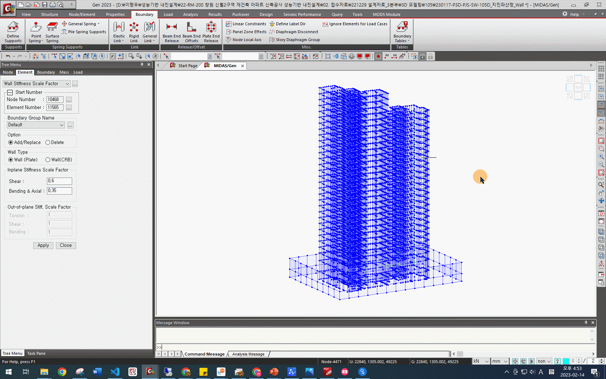

유효강성 설정#
성능기반 내진설계에서의 유효강성은 아래의 표1 에 따릅니다.

비선형모델의 유효강성(대한건축학회)#
참고
재료강도와 마찬가지로 유효강성도 Midas Gen에서 Perform-3D로 Import되는 정보가 아니지만, 이 후 생성할 레퍼런스 모델, 성능설계 모델과의 비교 검증을 위해 사용됩니다.
위의 표를 참고하여 Midas Gen에서 유효강성을 변경합니다. 다만 전단강성 \(GA_W\)의 경우, 계산에 필요한 단면적 \(A_W\)가 유효단면적( \(A_e\) )이 아닌 전체단면적( \(A_g\) )임에 주의해야 합니다. Midas Gen에서는 유효단면적(\(A_e = \frac{5}{6}A_g\) ; 모든 보의 단면적은 직사각형으로 가정함)을 자동으로 계산하여 사용하므로, 역수인 \(\frac{6}{5}(\approx 1.2)\)를 곱하여 전체단면적을 만들어 사용합니다.
연결보#
연결보의 유효강성은 아래의 절차에 따라 변경, 추가합니다.
What to do
Midas Gen에서 Properties - Scale Factor - Section Stiffness Scale Factor를 클릭합니다.

Section Stiffness Scale Factor 창에서 변경, 추가할 연결보의 Section을 선택한 후, Scale Factor를 변경하여 줍니다. 휨강성은 \(0.3EI\)이므로, \(I_{yy}, I_{zz}\)에 각각 \(0.3\)을 입력합니다.

입력 후, Add/Replace 버튼을 누릅니다.
전단강성은 \(0.04(\frac{l}{h})GA\)이므로, \(A_{sy}, I_{sz}\) 의 값을 변경해야 합니다. 연결보의 길이( \(l\) )와 깊이( \(h\) )를 확인한 후, \(0.04(\frac{l}{h})\)를 계산합니다. 위의 설명과 같이, 계산된 값에 \(1.2\)를 곱합니다.

경고
Midas Gen 모델링 과정에서 짧은 벽을 생략하는 경우, 연결보의 길이가 길게 모델링되는 경우가 있습니다. 따라서 도면을 확인 하여 정확한 연결보의 길이를 이용해 계산합니다.
모든 연결보의 유효강성을 변경, 추가한 후, Close 버튼을 누릅니다.


보, 기둥#
연결보와 동일한 방식으로 Section Stiffness Scale Factor에서 유효강성을 변경, 추가합니다.
벽체#
벽체의 유효강성은 균열이 있는 경우와 없는 경우로 나누어서 고려합니다. 본 성능기반 내진설계 업무절차서는 벽체에 균열이 있다고 가정하고 모델링할 것입니다.
벽체의 유효강성은 아래의 절차에 따라 변경, 추가합니다.
What to do
Midas Gen에서 Properties - Scale Factor - Wall Stiffness Scale Factor를 클릭합니다.
벽체의 휨강성은 \(0.7EI\) 이므로, Inplane Stiffness Scale Factor의 Bending & Axial에
0.7을 입력합니다.전단강성은 \(0.5GA\) 이지만, 연결보와 마찬가지로 전체단면적의 사용을 위해 \(1.2\)를 곱합니다. \(0.5 \times 1.2 = 0.6\)이므로,
0.6을 Inplane Stiffness Scale Factor의 Shear에 입력합니다.
모든 벽체를 선택한 후, Apply 버튼을 눌러 유효강성을 적용합니다. 지하외벽은 일반벽체와 다른 유효강성을 적용하므로, 지하외벽에는 적용하지 않습니다.


지하외벽#
지하외벽의 유효강성은 아래의 표에 따라 설정해야합니다. 2

비선형모델의 유효강성(한국지진공학회)#
지하외벽의 유효강성은 일반 벽체와 동일한 방식으로 Wall Stiffness Scale Factor에서 변경, 추가합니다. 표에 따라 Bending & Axial(휨강성)은 \(0.8\), Shear(전단강성)는 \(0.6\)로 설정한 후, 모든 지하외벽에 적용합니다.